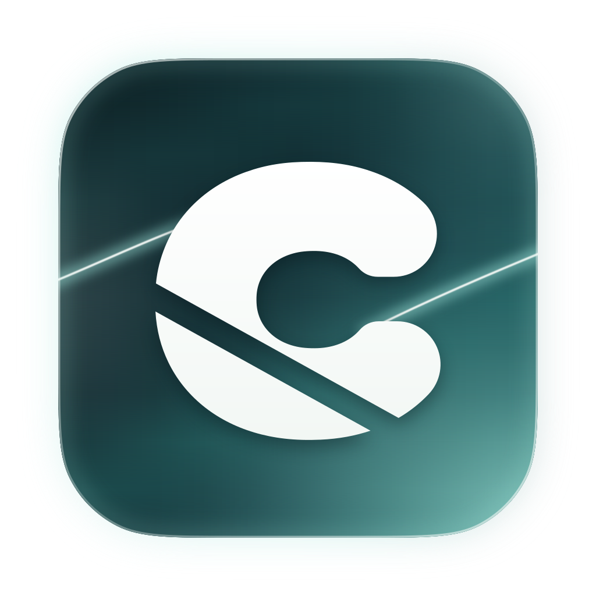

Pobieranie zaraz się zacznie
Jeśli nic się nie dzieje, kliknij przycisk. Potem otwórz Captylo.dmg i przeciągnij Captylo do folderu Programy.
Pobierz Captylo.dmg macOS 14.4 lub nowszy · Apple silicon · podpisane i sprawdzone przez AppleYour download starts in a moment. If it does not, use the button, then open Captylo.dmg and drag Captylo to Applications.
Wróć na captylo.com